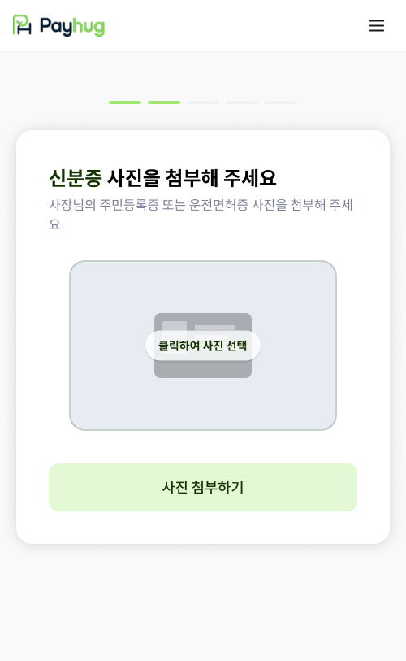

PART 2 · 가입에서 선정산 개시까지
13
신분증 첨부 — 주민번호 뒷자리는 가려진 채로 저장됩니다
사장님이 가장 많이 망설이는 단계입니다. 말로 설명하지 말고 오른쪽 화면을 보여드리세요
1 신분증 사진 올리기

주민등록증이나 운전면허증, 둘 중 하나면 됩니다
화면 안내 그대로입니다. 사장님 본인 신분증이어야 하고, 네 귀퉁이가 다 나오게 찍어 주세요. 잘리거나 빛이 번지면 다음 화면에서 글자를 잘못 읽어옵니다.
›
2 읽어온 정보 확인

주민번호 뒷자리는 이렇게 별표로 저장됩니다
화면에 보이시는 것처럼 뒷자리는 첫 한 자리만 남고 나머지는 가려집니다. 「주민번호를 왜 주냐」는 질문이 제일 많이 나옵니다. 그때 설명을 길게 하지 마시고 이 화면을 그대로 보여드리는 게 가장 빠릅니다.
가맹점 앱 · 계약 STEP5 신분증 첨부·확인 화면
payhug